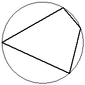

Впишите правильный ответ.
Два угла вписанного в окружность четырёхугольника равны и . Найдите бо́льший из оставшихся углов. Ответ дайте в градусах.

КЭС: 7.1 Фигуры на плоскости
Тип ответа: Краткий ответ
Источник ФИПИ
 и . Найдите бо́льший из оставшихся углов. Ответ дайте в градусах.
и . Найдите бо́льший из оставшихся углов. Ответ дайте в градусах.